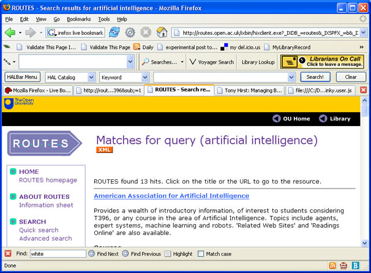

Quite some time ago, I produced a screenscraper for the OU Library ROUTES service that produced an RSS feed of the search results.
Some time later, the Library trialled an XML output feed (e.g. this example for the course T396) but as far as I know it was never publicised on the ROUTES pages. It also just seems to be tied to outputs from course searches. (I guess the API could be rather more complete, but trying a search using a keyword attribute didn't work, for example.)
My ROUTES-RSS generator can be called straightforwardly via an HTTP GET, as this example shows:
http://ouseful.open.ac.uk/ROUTEScraperRSS.php?ccode=artificial%20intelligence
As mentioned, this tool has been languishing largely unused for sometime, so today I thought I'd spend half an hour instaed of lunch plugging it into the ROUTES search results page with a Greasemonkey script.
Once installed, the script adds an obvious XML-RSS feed to the page. See if you can spot it:

If you want to give the script a go, make sure you have Greasemonkey installed (we're talking Firefox, here, naturally ;-), pop over to the OU-ROUTES XML linky script, and select Install User Script... from the browser Tools menu.
If you now do a search on the ROUTES catalogue, you should get the RSS results feed too. (If it's a frequent search, why not make the link a Live Bookmark?
What surprised me (not really) was how easy this was to do once I got my head round the Greasemonkey script. And it was quick too - half an hour or so playtime instead of lunch...
With tools like Greasmonkey available, personal remixing of pages (and Web Page+) is only just beginning...
Posted by ajh59 at June 8, 2005 01:35 PM